Previous slide Next slide Toggle fullscreen Open presenter view
CEN429 Secure Programming · Week 3
Data Security: In Transit, At Rest, In Use
CEN429 Secure Programming — Week 3
Asst. Prof. Dr. Uğur CORUH · 02.10.2026
RTEU Computer Engineering · 2026-2027 Fall
CEN429 Secure Programming · Week 3
Today's Plan (3 Hours)
Hour
Topic
1
Data states · Encryption fundamentals Demo 1 · Random numbers · Crypto APIs · IV/nonce Demo 2–3
2
Passwords and HKDF Demo 4–5 · Key management · TLS 1.3 Demo 6 · Wiring up TLS in code, fail-open
3
At rest Demo 7 · Masking · In use Demo 8 · Shells Demo 9 · Whitebox · Project
Learning outcomes: LO.2 (encryption, secure communication) · LO.4 (secure channel)
RTEU Computer Engineering · 2026-2027 Fall
CEN429 Secure Programming · Week 3
What We Bring from Earlier Weeks
The white-box attacker model — the owner of the device/server may also be the attacker; they can read memory, attach a debugger (Week 1) Secure erasure from memory — wiping a secret with explicit_bzero/OPENSSL_cleanse so the compiler can't remove it (Week 1) Entropy measurement — measuring the disorder in a file's bytes to tell encrypted/packed content apart (Week 2)
This week: the white-box model → data in use and whitebox ; entropy → the random generator's input .
RTEU Computer Engineering · 2026-2027 Fall
CEN429 Secure Programming · Week 3
This Week's Concepts
Each term is defined once, where it first appears in the body; here we only mark where .
Concept
Where
The three states of data (+ security shell)
Section 1
Encryption
Section 2
AEAD
Section 2
Symmetric / asymmetric
Section 2
Hash
Section 2
MAC and signature
Section 2
Randomness / CSPRNG
Section 3
IV / nonce / salt
Section 4
Key derivation (KDF)
Section 5–6
Forward secrecy
Section 6
Key hierarchy
Section 7
TLS
Section 8
RTEU Computer Engineering · 2026-2027 Fall
CEN429 Secure Programming · Week 3
How Do the Demos Work?
One source, two platforms: Windows (Visual Studio 2022) and WSL/Linux (GCC)
Crypto from a common header: Linux → OpenSSL , Windows → BCrypt (CNG) — no need to install OpenSSL
Build: Windows .\build.ps1 · WSL ./build.sh
Run: Windows .\demo.ps1 · WSL sh demo.sh
Binaries live in each demo's bin\windows / bin/linux folder
⚠️ Ethics: the network is localhost only; the certificates are ours; try these
RTEU Computer Engineering · 2026-2027 Fall
CEN429 Secure Programming · Week 3
1. The Three States of Data and the Security Shell
RTEU Computer Engineering · 2026-2027 Fall
CEN429 Secure Programming · Week 3
Why Are We Focusing on Data?
In the first two weeks, we protected the program itself with "bug → attack → fix."
This week the focus shifts to the data : passwords, payment keys, personal information.
A secret exists in three separate states throughout its lifecycle.
Each state has a different threat and a different defence.
RTEU Computer Engineering · 2026-2027 Fall
CEN429 Secure Programming · Week 3
A Brief History — Tools for Protecting Data
1976 Diffie–Hellman (public key) · 1977 RSA and DES 2001 — AES (Rijndael) replaces DES2007 — GCM becomes a standard: the AEAD era (confidentiality + integrity together)1994 → 2018 — SSL → TLS 1.0 → TLS 1.3
The rule follows from this: don't write your own crypto, use AEAD , and manage the key correctly.
RTEU Computer Engineering · 2026-2027 Fall
CEN429 Secure Programming · Week 3
A Secret's Three States
State
Where
Threat
Defence
In transit Network
Eavesdropping, MITM
TLS + pinning + message AEAD
At rest Disk/DB
File theft
Field encryption (AEAD)
In use RAM
Memory dump
Short lifetime, secure erasure
Each state's threat and defence are different . You have to think about all of them together.
RTEU Computer Engineering · 2026-2027 Fall
CEN429 Secure Programming · Week 3
The Three States — At a Glance
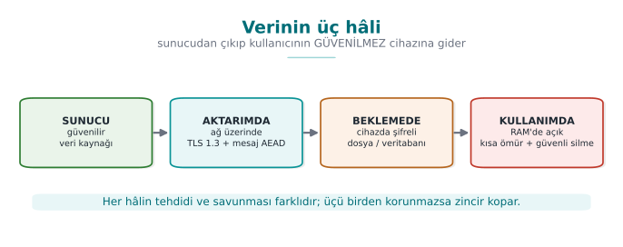
RTEU Computer Engineering · 2026-2027 Fall
CEN429 Secure Programming · Week 3
Main Idea: The Security Shell
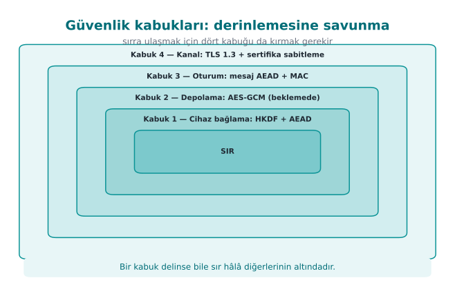
To reach the secret, the attacker must break all of them in sequence = defence in depth.
RTEU Computer Engineering · 2026-2027 Fall
CEN429 Secure Programming · Week 3
Example Architecture: Phone ↔ Server
Phone: an untrusted environment — the user (i.e., a possible attacker) owns the device; it may be rooted/debugged.Server: the trusted party.At every interface, ask: which data, which state, how is identity verified, confidentiality or integrity?
RTEU Computer Engineering · 2026-2027 Fall
CEN429 Secure Programming · Week 3
2. Encryption Fundamentals
RTEU Computer Engineering · 2026-2027 Fall
CEN429 Secure Programming · Week 3
The Four Families of Cryptography — Diagram
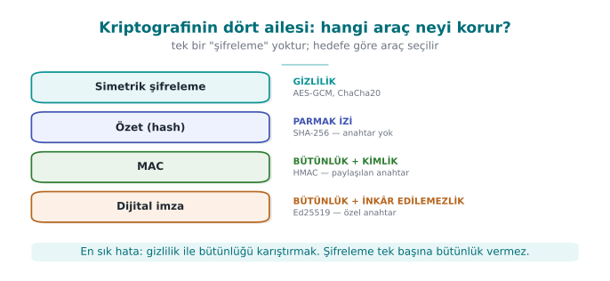
RTEU Computer Engineering · 2026-2027 Fall
CEN429 Secure Programming · Week 3
Cryptography Isn't One Thing
Encryption, briefly: turning plaintext into unreadable ciphertext with a key; decryption reverses this with the same (or a matching) key; security rests on the key's secrecy.Different tools exist for different goals.The four most commonly confused families: encryption, hash, MAC, signature.
Which gives confidentiality , which gives integrity , which gives both ?
RTEU Computer Engineering · 2026-2027 Fall
CEN429 Secure Programming · Week 3
Tool
Provides
Example
Symmetric encryption
Confidentiality
AES, ChaCha20
Asymmetric encryption
Confidentiality + key distribution
RSA, EC
Hash
Fingerprint (keyless)
SHA-256
MAC
Integrity + identity (shared key)
HMAC
Signature
+ non-repudiation
Ed25519
AEAD Confidentiality + integrity together AES-GCM
❌ Encrypting alone doesn't give integrity · ❌ Don't write your own algorithm (Kerckhoffs)
RTEU Computer Engineering · 2026-2027 Fall
CEN429 Secure Programming · Week 3
The Two Most Common Mistakes
Encrypting alone, forgetting integrity. Ciphertext (e.g., AES-CTR) doesn't stop an attacker from flipping bits undetected .Writing your own cipher/mode. Kerckhoffs's principle: security rests on the key's secrecy, not the algorithm's.
Use standard, proven constructions; homemade crypto is broken almost every time.
RTEU Computer Engineering · 2026-2027 Fall
CEN429 Secure Programming · Week 3
Why Isn't Symmetric Enough On Its Own?
Symmetric (AES): very fast.But both parties need to know the same secret key .
How do you share that key over an insecure network?
The answer is on the next slide.
RTEU Computer Engineering · 2026-2027 Fall
CEN429 Secure Programming · Week 3
What Does Asymmetric Solve, What Does It Cost?
Asymmetric (RSA/EC): everyone has a public (distributed) and a private (secret) key.It solves the key-distribution problem.
But operations are slow ; not suitable for large data (100–1000× slower).
RTEU Computer Engineering · 2026-2027 Fall
CEN429 Secure Programming · Week 3
Hybrid: Both Together
Hybrid: asymmetric crypto carries a small symmetric key ; the data is then encrypted with it using AEAD.Real systems always work this way.
This is exactly what TLS does: a session key via ECDHE → traffic with AES-GCM.
RTEU Computer Engineering · 2026-2027 Fall
CEN429 Secure Programming · Week 3
Symmetric vs. Asymmetric — Comparison
Property
Symmetric (AES)
Asymmetric (RSA/EC)
Speed
Very fast
Slow (100–1000×)
Key
Single, shared secret
Public/private pair
Use
Encrypting large data
Key transport, signatures
This week
File/DB/session
TLS key setup (Week 10)
RTEU Computer Engineering · 2026-2027 Fall
CEN429 Secure Programming · Week 3
What Is a Block Cipher?
Block cipher: an algorithm that encrypts data in fixed-size blocks .AES: encrypts one 16-byte block at a time.Data longer than a block needs a mode (mode of operation).
RTEU Computer Engineering · 2026-2027 Fall
CEN429 Secure Programming · Week 3
Block or Stream? The Mode Matters
AES is a block cipher (16 bytes). Longer data needs a mode :
Mode
Status
ECB ❌ leaks patterns (Demo 3)
CBC needs a random IV, no integrity on its own
CTR turns it into a stream, very sensitive to nonce reuse (Demo 2)
GCM ✅ CTR + MAC = AEAD
RTEU Computer Engineering · 2026-2027 Fall
CEN429 Secure Programming · Week 3
ChaCha20: A Stream Cipher
Stream cipher: no block concept; generates a keystream the same length as the data and XORs it.ChaCha20 is already a stream cipher.
+ Poly1305 MAC = AEAD (ChaCha20-Poly1305, RFC 8439).
Same result: confidentiality + integrity in one package.
RTEU Computer Engineering · 2026-2027 Fall
CEN429 Secure Programming · Week 3
Hash (Digest): A One-Way Fingerprint
Keyless. Only shows whether the data has changed .An attacker can change the data and recompute the digest too .
So a digest alone is not proof of integrity.
Old MD5/SHA-1 are collision-prone; use SHA-256/SHA-3 .
RTEU Computer Engineering · 2026-2027 Fall
CEN429 Secure Programming · Week 3
MAC: Integrity with a Shared Key
MAC (e.g., HMAC-SHA-256): requires a shared secret key .It says, "someone who knows the key sent this message, and it hasn't changed."
Since both parties know the key, a MAC does not provide non-repudiation.
MAC comparison must be constant-time (CRYPTO_memcmp), not plain memcmp.
RTEU Computer Engineering · 2026-2027 Fall
CEN429 Secure Programming · Week 3
Signature: Non-Repudiation
Digital signature (Ed25519, RSA-PSS): works with a public/private key pair.Only the private-key holder can produce a signature; anyone can verify it with the public key.
That's why it provides non-repudiation .
Certificates and release signing (Week 10) rely on this.
RTEU Computer Engineering · 2026-2027 Fall
CEN429 Secure Programming · Week 3
Hash / MAC / Signature: Which One, When?
Question
Tool
"Is the file corrupted?" (keyless)
Hash (SHA-256)
"Did someone who knows the key send it, unchanged?"
MAC (HMAC)
"Definitely this person signed it, they can't deny it"
Signature (Ed25519)
"Keep it secret AND prove its integrity"
AEAD (AES-GCM)
⚠️ A digest alone is not proof of integrity (the attacker can recompute it too).
RTEU Computer Engineering · 2026-2027 Fall
CEN429 Secure Programming · Week 3
AEAD Is Usually the Right Answer
Instead of wiring up "encrypt + add a MAC" separately, use AEAD .
It does both jobs in one call , in the right order (encrypt-then-MAC), with fewer chances for error.
A separate MAC is needed only for data that won't be encrypted but still needs integrity (or via AEAD's AAD field).
RTEU Computer Engineering · 2026-2027 Fall
CEN429 Secure Programming · Week 3
What Is Demo 1?
Demo 1 · code/week-03/01-aes-gcm-dosya — AEAD, NIST SP 800-38D.Encrypts a file with AES-256-GCM.
Output format: [12-byte nonce][ciphertext][16-byte tag].
Then we see that flipping one byte of the ciphertext, and of the tag alone, causes decryption to be rejected .
RTEU Computer Engineering · 2026-2027 Fall
CEN429 Secure Programming · Week 3
Demo 1 — Code
kripto_rastgele(nonce, 12 );
kripto_gcm_sifrele(anahtar, nonce, 12 , NULL , 0 ,
duz, duz_boy, cik+12 , etiket);
int ok = kripto_gcm_coz(...);
if (!ok) { }
RTEU Computer Engineering · 2026-2027 Fall
CEN429 Secure Programming · Week 3
Demo 1 — Real Output
ADIM 3 Cozuldu ve DOGRULANDI (53 bayt)
ADIM 4 1 bayt degistir -> DOGRULAMA BASARISIZ, REDDEDILDI
ADIM 5 yalniz etiketi degistir -> yine REDDEDILDI
RTEU Computer Engineering · 2026-2027 Fall
CEN429 Secure Programming · Week 3
Demo 1 — Steps 2 and 3: Nonce, Correct Decryption
Step 2: A random 12-byte nonce was generated and written to the start of the file.The nonce is not secret (it sits in the clear in the file); it only needs to be unique .
Step 3: Decrypted with the same key and nonce; the tag held, and the plaintext came back.
RTEU Computer Engineering · 2026-2027 Fall
CEN429 Secure Programming · Week 3
Salt, IV, Nonce — Diagram
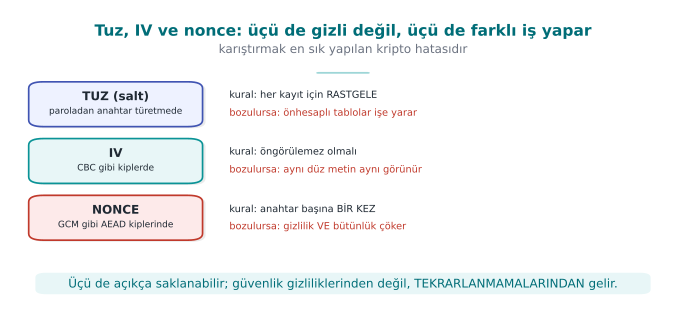
RTEU Computer Engineering · 2026-2027 Fall
CEN429 Secure Programming · Week 3
Demo 1 — Steps 4 and 5: Tampering → Rejection
Step 4: Byte 20 of the ciphertext was XORed with a change. Since the GCM tag is computed over the whole ciphertext, even a single byte breaks the tag → decryption rejected.Step 5: This time only the tag was touched; also rejected.The tag is computed together with the data and the key; an attacker can't produce it without the key.
RTEU Computer Engineering · 2026-2027 Fall
CEN429 Secure Programming · Week 3
Demo 1 — Rule
✅ If you're encrypting something, use AEAD (AES-GCM / ChaCha20-Poly1305)unique nonce for every messageAlways verify the tag; produce no output at all on failure (fail-closed)
RTEU Computer Engineering · 2026-2027 Fall
CEN429 Secure Programming · Week 3
Demo 1 — Common-Mistakes Checklist
[ ] Is the nonce unique for every message? (A fixed nonce is a disaster)
[ ] Is the tag stored and verified when decrypting?
[ ] Does the code exit without producing output when verification fails?
[ ] Does the key come from a secure source rather than being embedded in code?
[ ] Is AES-CBC/CTR never used alone (without a MAC)?
RTEU Computer Engineering · 2026-2027 Fall
CEN429 Secure Programming · Week 3
3. Random Numbers and Crypto APIs
RTEU Computer Engineering · 2026-2027 Fall
CEN429 Secure Programming · Week 3
Three Kinds of Randomness — Diagram
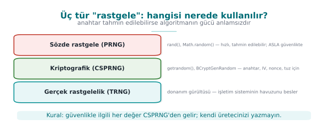
RTEU Computer Engineering · 2026-2027 Fall
CEN429 Secure Programming · Week 3
Why Does Randomness Matter So Much?
Key, IV, nonce, salt, session ID — all rest on a single assumption: unpredictability .
If the world's best encryption algorithm gets its key from a predictable generator, it protects nothing .
In this section we'll look at the wrong ways first, then the right way.
RTEU Computer Engineering · 2026-2027 Fall
CEN429 Secure Programming · Week 3
Three Kinds of "Random"
Kind
Example
Predictable?
Use
Statistical
rand(), mt19937, Java RandomYes Games, simulation
Cryptographic (CSPRNG)
getrandom, BCryptGenRandom, RAND_bytesNo
Keys, IVs, nonces, salts, tokens
True (entropy)
Hardware noise
No
Seeding a CSPRNG
Rule: every security-relevant random value comes from a CSPRNG
Anyone who sees 624 outputs of mt19937 can compute every output after that
RTEU Computer Engineering · 2026-2027 Fall
CEN429 Secure Programming · Week 3
Mistake 1 — Seeding with Time
srand(time(NULL ));
unsigned char anahtar[16 ];
for (int i = 0 ; i < 16 ; i++)
anahtar[i] = rand() & 0xFF ;
If an attacker knows which day the key was generated, there are only 86,400 possible seeds for that day. A laptop tries them all in seconds.
RTEU Computer Engineering · 2026-2027 Fall
CEN429 Secure Programming · Week 3
Mistake 2 — Accidentally Wiping Out Entropy
The Debian OpenSSL disaster (2008): a packager removed two lines that added entropy to OpenSSL's random pool, to silence a warning.
For two years, the only entropy source was the process ID (≤ 32,768 values).
Attackers pre-generated and listed every possible key (CVE-2008-0166 ).
RTEU Computer Engineering · 2026-2027 Fall
CEN429 Secure Programming · Week 3
Four Common Misconceptions — Diagram
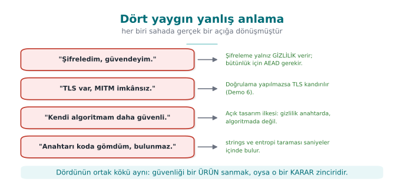
RTEU Computer Engineering · 2026-2027 Fall
CEN429 Secure Programming · Week 3
Mistake 2 — Takeaway
➡️ Don't touch cryptographic code without understanding it.
➡️ Statistically testing a random generator's output does not prove its unpredictability.
RTEU Computer Engineering · 2026-2027 Fall
CEN429 Secure Programming · Week 3
Mistake 3 — Bias When Reducing to a Range
r % 6 looks harmless. If r is uniform over 0–255:
256 = 42*6 + 4
Values 0–3 come out 43 times each , values 4–5 come out 42 times each .
Irrelevant for a die roll; increases predictability when generating a password/OTP.
The correct method is rejection sampling — next slide.
RTEU Computer Engineering · 2026-2027 Fall
CEN429 Secure Programming · Week 3
The Right Way: The Operating System's Generator
while (n > 0 ) {
ssize_t r = getrandom(p, n, 0 );
if (r < 0 ) { if (errno == EINTR) continue ; return -1 ; }
p += r; n -= (size_t )r;
}
BCryptGenRandom(NULL , buf, n, BCRYPT_USE_SYSTEM_PREFERRED_RNG);
if (RAND_bytes(buf, n) != 1 ) { }
⚠️ If you don't check the return value, you'll run with a zero key that you thought was "random"
RTEU Computer Engineering · 2026-2027 Fall
CEN429 Secure Programming · Week 3
Why Should You Check the Return Value?
The random generator can fail .
If unchecked, the buffer stays uninitialized (or zero).
The program keeps running with what it thinks is a "random" but is actually a fixed key.
The only correct behaviour on failure: stop the process .
RTEU Computer Engineering · 2026-2027 Fall
CEN429 Secure Programming · Week 3
Unbiased Range with Rejection Sampling
uint32_t aralikta_rastgele (uint32_t ust) {
uint32_t sinir = (uint32_t )(-ust) % ust, r;
do rastgele_bayt (&r, sizeof r) ; while (r < sinir);
return r % ust;
}
Idea: use the largest part of the 2³² values that divides evenly by ust, and discard the remainder.
RTEU Computer Engineering · 2026-2027 Fall
CEN429 Secure Programming · Week 3
Random Values — Usage List
Value
Secret?
Unique?
Key
Yes Yes
GCM nonce (12 B)
No
Never repeats (random: ≤ 2³² messages/key)
CBC IV
No
Unpredictable
Salt · Session token
No · Yes
Yes
RTEU Computer Engineering · 2026-2027 Fall
CEN429 Secure Programming · Week 3
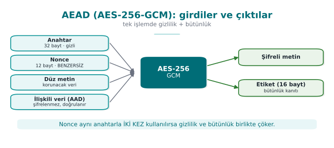
AAD: not encrypted, but if it's changed the tag won't hold — file header, version, record ID
Week 1's "Vault": derivation parameters as AAD → the iteration count can't be changed
RTEU Computer Engineering · 2026-2027 Fall
CEN429 Secure Programming · Week 3
Now Let's Open Up the Crypto API
In Demo 1 we left the work to ready-made helper functions.
Now we'll write OpenSSL's EVP interface line by line.
Goal: see where mistakes can happen when using the library.
The rule still applies: you don't write your own algorithm , but calling a ready-made algorithm correctly is also a skill.
RTEU Computer Engineering · 2026-2027 Fall
CEN429 Secure Programming · Week 3
EVP Encryption — Step 1: Choose the Algorithm
EVP_EncryptInit_ex(ctx, EVP_aes_256_gcm(), NULL , NULL , NULL );
Choose the algorithm (AES-256-GCM ).
Don't give the key and nonce yet — that's the next step.
RTEU Computer Engineering · 2026-2027 Fall
CEN429 Secure Programming · Week 3
EVP Encryption — Step 2: Nonce Length
EVP_CIPHER_CTX_ctrl(ctx, EVP_CTRL_GCM_SET_IVLEN, 12 , NULL );
Set the nonce (IV) length.
The recommended value for GCM is 12 bytes ; that's also the default, but writing it explicitly is good practice.
RTEU Computer Engineering · 2026-2027 Fall
CEN429 Secure Programming · Week 3
EVP Encryption — Step 3: Key + Nonce
EVP_EncryptInit_ex(ctx, NULL , NULL , anahtar, nonce);
Give the key and the nonce now .
The spots left NULL in the first Init call are filled in here.
RTEU Computer Engineering · 2026-2027 Fall
CEN429 Secure Programming · Week 3
EVP Encryption — Step 4: AAD
EVP_EncryptUpdate(ctx, NULL , &n, aad, aad_n);
Give the AAD: the output buffer is NULL
The AAD is not encrypted , it only goes into the tag (file header, version, record ID).
RTEU Computer Engineering · 2026-2027 Fall
CEN429 Secure Programming · Week 3
EVP Encryption — Step 5: Encrypt the Data
EVP_EncryptUpdate(ctx, sifreli, &n, acik, acik_n);
Encrypt the plaintext.
For large data, this step can be repeated in chunks .
RTEU Computer Engineering · 2026-2027 Fall
CEN429 Secure Programming · Week 3
EVP Encryption — Step 6: Finalize (MANDATORY)
EVP_EncryptFinal_ex(ctx, sifreli + n, &n);
Because GCM runs in stream mode, there is no padding ; this call usually writes 0 bytes.
But calling it is mandatory : the tag is computed here.
RTEU Computer Engineering · 2026-2027 Fall
CEN429 Secure Programming · Week 3
EVP Encryption — Step 7: Get the Tag
EVP_CIPHER_CTX_ctrl(ctx, EVP_CTRL_GCM_GET_TAG, 16 , etiket);
Get the tag and store it along with the ciphertext.
RTEU Computer Engineering · 2026-2027 Fall
CEN429 Secure Programming · Week 3
Seven Steps — Together
EVP_EncryptInit_ex(ctx, EVP_aes_256_gcm(), NULL , NULL , NULL );
EVP_CIPHER_CTX_ctrl(ctx, EVP_CTRL_GCM_SET_IVLEN, 12 , NULL );
EVP_EncryptInit_ex(ctx, NULL , NULL , anahtar, nonce);
EVP_EncryptUpdate(ctx, NULL , &n, aad, aad_n);
EVP_EncryptUpdate(ctx, sifreli, &n, acik, acik_n);
EVP_EncryptFinal_ex(ctx, sifreli + n, &n);
EVP_CIPHER_CTX_ctrl(ctx, EVP_CTRL_GCM_GET_TAG, 16 , etiket);
Every call's return value is checked · a single exit point (goto son) · EVP_CIPHER_CTX_free
RTEU Computer Engineering · 2026-2027 Fall
CEN429 Secure Programming · Week 3
Decryption — Steps 1–2: Open, Set the Tag
EVP_DecryptUpdate(ctx, acik, &n, sifreli, sifreli_n);
EVP_CIPHER_CTX_ctrl(ctx, EVP_CTRL_GCM_SET_TAG, 16 , etiket);
DecryptUpdate writes the plaintext to the buffer immediately — it isn't verified yet!The expected tag is given before Final.
RTEU Computer Engineering · 2026-2027 Fall
CEN429 Secure Programming · Week 3
Decryption — Step 3: The Mandatory Final Check
if (EVP_DecryptFinal_ex(ctx, acik + n, &n) != 1 ) {
OPENSSL_cleanse(acik, sifreli_n);
return -1 ;
}
Windows CNG: BCryptDecrypt → STATUS_AUTH_TAG_MISMATCH (0xC000A002)
🚨 The most common AEAD mistake: using the buffer's contents without checking Final's return value
RTEU Computer Engineering · 2026-2027 Fall
CEN429 Secure Programming · Week 3
Constant-Time Comparison
unsigned char fark = 0 ;
for (size_t i = 0 ; i < n; i++) fark |= a[i] ^ b[i];
return fark == 0 ;
memcmp stops at the first differing byte; the timing leaks how many bytes were correct. Ready-made alternatives: CRYPTO_memcmp, sodium_memcmp.
RTEU Computer Engineering · 2026-2027 Fall
CEN429 Secure Programming · Week 3
Checklist for Using a Crypto Library
[ ] Every return value is checked; error = stop
[ ] A fresh nonce every time · tag verified before use
[ ] MAC comparison is constant-time (not memcmp)
[ ] No "tag error" ≠ "padding error" message (an oracle )
[ ] No DES/3DES, RC4, MD5, SHA-1 (for signing), or ECB
RTEU Computer Engineering · 2026-2027 Fall
CEN429 Secure Programming · Week 3
In the Field: The Algorithm Inventory
Real product guides include an algorithm inventory : every algorithm, its purpose, its key size.
A good critical-reading exercise: old inventories show SHA-1 or CBC with a separate MAC .
An inventory written today should show SHA-256 and AEAD instead.
RTEU Computer Engineering · 2026-2027 Fall
CEN429 Secure Programming · Week 3
How Does an Evaluator Test This?
Compares the algorithm inventory against the source code.Examines nonce generation and repetition.
Feeds back tampered ciphertext with one bit changed; confirms the application rejects it without a detailed error.
Looks for memcmp in MAC comparisons.
RTEU Computer Engineering · 2026-2027 Fall
CEN429 Secure Programming · Week 3
4. IV / Nonce / Salt
RTEU Computer Engineering · 2026-2027 Fall
CEN429 Secure Programming · Week 3
All Three Are NOT Secret, But...
Concept
Where
Rule
If Broken
Salt Key from password
random, per record
rainbow table
IV CBC
random, unpredictable
first block leaks
Nonce CTR/GCM
must never repeat with the key
keystream leaks
The only thing that's secret is the key .
RTEU Computer Engineering · 2026-2027 Fall
CEN429 Secure Programming · Week 3
Why Is Nonce Reuse a Disaster?
CTR/GCM: C = P ⊕ KS(key, nonce)
The same key and the same nonce in two messages:
C1 = P1 ⊕ AA C2 = P2 ⊕ AA
C1 ⊕ C2 = P1 ⊕ P2 <-- anahtar akisi yok oldu!
The attacker obtains the XOR of two plaintexts . If they know one, they decrypt the other.
Real incidents: WEP's short IV, Sony PS3's repeated signature value.
RTEU Computer Engineering · 2026-2027 Fall
CEN429 Secure Programming · Week 3
Demo 2 — Nonce Reuse Leaks Data
KOTU (ayni nonce):
C1 xor C2 = 070e1c08...5c1215
P1 xor P2 = 070e1c08...5c1215 <-- AYNI = sizdi
P2 = (C1 xor C2) xor P1 = "Toplam bakiye 45000 TL..."
IYI (farkli nonce):
C1 xor C2 != P1 xor P2 <-- sizinti YOK
✅ Generate the nonce randomly or as a persistent counter ; never repeat it.
RTEU Computer Engineering · 2026-2027 Fall
CEN429 Secure Programming · Week 3
Demo 2 — Rule (Continued)
A random nonce is practical ; but with many messages under the same key (NIST recommendation: ≤ 2³²), the birthday-bound probability kicks in.
Alternative: make the nonce a counter — but the counter must be stored persistently (not reset when the device restarts).
Real incidents: WEP's short IV, Sony PS3's repeated random value in ECDSA (the private key was extracted).
RTEU Computer Engineering · 2026-2027 Fall
CEN429 Secure Programming · Week 3
Demo 3 — ECB Leaks a Pattern ("the Penguin")
Orijinal AES-128-ECB AES-256-GCM
######## ================ : -..--+%%*-:*
# ## ## =##==####====## *.#*##:*%+###:
# ##### =##=====##==### :+ .- .% +.#%=
######## ================ =%+## #:###%+%
❌ ECB: the same block → the same ciphertext block, the shape stays readable
RTEU Computer Engineering · 2026-2027 Fall
CEN429 Secure Programming · Week 3
ECB — Rule
✅ Don't use ECB. For encryption, use AEAD (GCM, ChaCha20-Poly1305); for disk, use XTS-AES.
Every occurrence of ecb in code review is a finding . An evaluator can catch ECB automatically by looking for repeated 16-byte blocks in the same plaintext.
RTEU Computer Engineering · 2026-2027 Fall
CEN429 Secure Programming · Week 3
This Section's Rule
Salt, IV, nonce : none of them is secret, but each requires a different kind of non-repetition .A nonce must never repeat with the same key.
ECB is forbidden. Choosing a mode is a security decision.
RTEU Computer Engineering · 2026-2027 Fall
CEN429 Secure Programming · Week 3
5. Deriving a Key from a Password
RTEU Computer Engineering · 2026-2027 Fall
CEN429 Secure Programming · Week 3
Deriving a Key from a Password — Diagram
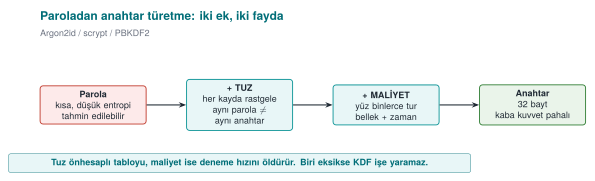
RTEU Computer Engineering · 2026-2027 Fall
CEN429 Secure Programming · Week 3
Why Can't a Password Be a Key Directly?
A password is short, low-entropy, and predictable .
Made directly into a key, brute force becomes cheap.
Solution: a key derivation function from a password (KDF ).
KDFs in general: you can derive a key not only from a password but also from a master secret — we'll see this in Section 6 (HKDF ).
RTEU Computer Engineering · 2026-2027 Fall
CEN429 Secure Programming · Week 3
A KDF Does Two Jobs
Salt: random → rainbow tables are useless, matching passwords aren't obviousSlowness: hundreds of thousands of rounds → every attempt is expensive, brute force slows down
KDF
Cost
When
PBKDF2
CPU (rounds)
compatibility/FIPS
scrypt
CPU + memory
memory-hard
Argon2id CPU + memory + parallelism
first choice
RTEU Computer Engineering · 2026-2027 Fall
CEN429 Secure Programming · Week 3
Demo 4 — Round Count, Timing, Salt
1) TUZ: ayni parola + ayni tuz -> AYNI anahtar
ayni parola + FARKLI tuz -> FARKLI anahtar
2) TUR vs SURE (WSL):
tur = 1000 -> 0.37 ms
tur = 100000 -> 39.05 ms
tur = 600000 -> 209.55 ms <-- OWASP 2023 asgari
tur =2000000 -> 628.42 ms
RTEU Computer Engineering · 2026-2027 Fall
CEN429 Secure Programming · Week 3
Demo 4 — The Effect of the Salt
Same password + same salt → the same key every time.
If the salt is fixed, an attacker can build one table and search everyone.
Same password + different salt → a completely different key.
➡️ The salt must be random and unique for every record.
RTEU Computer Engineering · 2026-2027 Fall
CEN429 Secure Programming · Week 3
Demo 4 — The Effect of Cost
As the round count went from 1,000 to 2,000,000, the time went from ~0.4 ms to ~628 ms.
This is a direct multiplier : every attempt by the attacker gets that much more expensive too.
"200 ms at user login" is acceptable; for an attacker, it means thousands of attempts instead of billions .
RTEU Computer Engineering · 2026-2027 Fall
CEN429 Secure Programming · Week 3
Demo 4 — Rule
✅ Random salt + Argon2id (or high-round PBKDF2). ❌ Plain/unsalted SHA-256.
RTEU Computer Engineering · 2026-2027 Fall
CEN429 Secure Programming · Week 3
Going Further: Pepper
In addition to the salt, a secret pepper can be added — not stored in the database, but kept in configuration or an HSM.
If the DB is stolen (as long as the pepper doesn't leak), the digests get one more layer of protection.
The salt is not secret; the pepper is.
RTEU Computer Engineering · 2026-2027 Fall
CEN429 Secure Programming · Week 3
This Section's Rule
Never make a password a key directly.A random salt + a KDF with enough cost (Argon2id preferred).
Tune the cost to the hardware, and increase it over the years.
RTEU Computer Engineering · 2026-2027 Fall
CEN429 Secure Programming · Week 3
6. HKDF, Session Keys, Forward Secrecy
RTEU Computer Engineering · 2026-2027 Fall
CEN429 Secure Programming · Week 3
Why Not Use the Master Secret Directly?
A long-lived "master secret" is never used directly.
Separate keys are derived from it for every purpose and every session.
The tool: HKDF (RFC 5869) — a two-stage KDF.
RTEU Computer Engineering · 2026-2027 Fall
CEN429 Secure Programming · Week 3
Input: master secret + salt .
Output: a uniform pseudorandom key (PRK) .
Goal: compress the irregularity in the raw secret into a uniform key.
RTEU Computer Engineering · 2026-2027 Fall
CEN429 Secure Programming · Week 3
HKDF Step 2: Expand
Input: PRK + an info
Output: a key of the requested length.
Different info → different key. From the same PRK, an encryption key, a MAC key, and a session key each come out separately.
RTEU Computer Engineering · 2026-2027 Fall
CEN429 Secure Programming · Week 3
HKDF: Derived Keys from a Master Secret
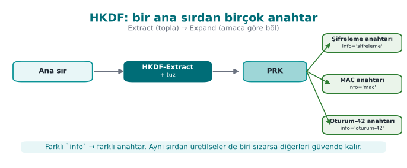
Different info → different key. One purpose's key is never used for another purpose.
RTEU Computer Engineering · 2026-2027 Fall
CEN429 Secure Programming · Week 3
What Is Forward Secrecy?
Forward secrecy: even if today's key leaks, old sessions can't be decrypted.A one-way chain: K0 = master secret, Kᵢ = HKDF(Kᵢ₋₁).
Delete the previous one at every step.
RTEU Computer Engineering · 2026-2027 Fall
CEN429 Secure Programming · Week 3
Forward Secrecy — Diagram
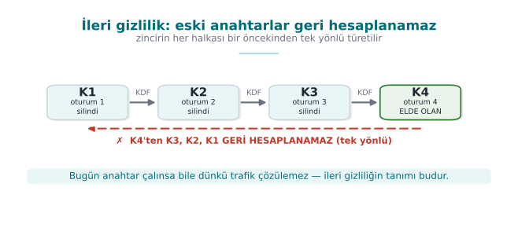
Even if today's key leaks, old sessions stay safe. Default in TLS 1.3 (with ephemeral ECDHE).
RTEU Computer Engineering · 2026-2027 Fall
CEN429 Secure Programming · Week 3
Demo 5 — HKDF Output
info='...sifreleme...' -> 2b8b4684...0e577a55
info='...MAC...' -> 30a302d1...c55dfa84 (farkli)
ILERI GIZLILIK zinciri:
K1=0630f63f... K2=def84847...
K3=54b13f0f... K4=55524a8f...
^ her adimda eski anahtar silindi
RTEU Computer Engineering · 2026-2027 Fall
CEN429 Secure Programming · Week 3
Demo 5 — Explanation
From the same master secret, different keys came out with different info values; one purpose's key can't be used for another.
In the forward-secrecy chain, the previous key was deleted at every step.
Only K4 remains; since the chain is one-way, K3, K2, K1 can't be recomputed from K4.
RTEU Computer Engineering · 2026-2027 Fall
CEN429 Secure Programming · Week 3
Demo 5 — Rule
✅ A separate key per purpose/session · a unique info for every derivation · delete after use.
RTEU Computer Engineering · 2026-2027 Fall
CEN429 Secure Programming · Week 3
This Section's Rule
Derive separate keys from the master secret for each purpose and session .
Give every derivation a unique info/label.
Delete short-lived session keys after use .
RTEU Computer Engineering · 2026-2027 Fall
CEN429 Secure Programming · Week 3
7. Dynamic Key Management
RTEU Computer Engineering · 2026-2027 Fall
CEN429 Secure Programming · Week 3
Was the Algorithm Broken, or Was the Key Mismanaged?
Of the incidents reported as "the algorithm was broken," only a tiny fraction are actually the algorithm breaking.
The vast majority are key-management mistakes: a key embedded in code, a key that never changes, one key for every job.
This section exists to prevent these mistakes.
RTEU Computer Engineering · 2026-2027 Fall
CEN429 Secure Programming · Week 3
A Key's Life (NIST SP 800-57)
Generation → Distribution → Storage → Use → Renewal → Revocation → Destruction
Stage
Typical mistake
Generation
rand(), a fixed key, a key generated where it shouldn't be (the client)
Distribution
Plaintext; relying only on TLS
Storage
Plain in source code / a configuration file
Use
The same key for encryption and MAC
Renewal
Never changing
Destruction
A copy left in a backup, a log, memory
RTEU Computer Engineering · 2026-2027 Fall
CEN429 Secure Programming · Week 3
What Is a Crypto-Period?
The length of time a key is allowed to be used .
Once it expires, the key is no longer used to encrypt new data.
It may be kept a while longer to decrypt old data.
Factors: how much data is protected, how long it must stay confidential, how exposed the key is.
RTEU Computer Engineering · 2026-2027 Fall
CEN429 Secure Programming · Week 3
A Key's Life — Diagram
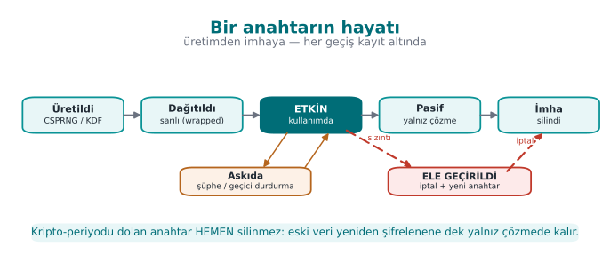
RTEU Computer Engineering · 2026-2027 Fall
CEN429 Secure Programming · Week 3
Key Hierarchy: Two Basic Ideas
Key separation: different keys for different purposes (via HKDF info).Limiting the damage: compromising a lower-level key affects only that branch .
RTEU Computer Engineering · 2026-2027 Fall
CEN429 Secure Programming · Week 3
Key Hierarchy
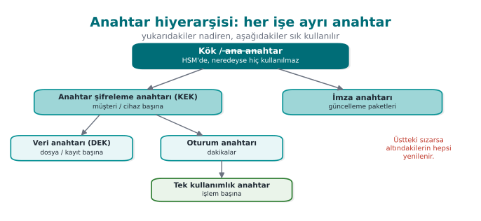
Key separation: a separate key for each purpose (HKDF info)Limiting damage: if a single-use key is stolen, what's lost = one transaction
RTEU Computer Engineering · 2026-2027 Fall
CEN429 Secure Programming · Week 3
Hierarchy and Key Renewal in Payments
An EMV-style chain:
Issuer master key (HSM) → card master key (card no. + sequence no.) → session key (transaction counter) → single-use key
Only the limited-use keys at the bottom reach the phone
New ones are requested from the server when they run out (replenishment )
Even if the phone is compromised: a few transactions' worth of key, easily revoked server-side
RTEU Computer Engineering · 2026-2027 Fall
CEN429 Secure Programming · Week 3
Envelope Encryption — Why?
Encrypting large data directly with the master key creates two problems:
The master key is used often → more exposure time.
When the key changes, all the data must be re-encrypted.
RTEU Computer Engineering · 2026-2027 Fall
CEN429 Secure Programming · Week 3
Envelope Encryption — Four Steps
A random data encryption key (DEK) is generated per record; the data is encrypted with it.
The DEK is wrapped with a key encryption key (KEK) .
The KEK sits somewhere secure: a TPM, an HSM, a cloud KMS.
When the KEK is renewed, only the small DEKs are rewrapped — not the data.
RTEU Computer Engineering · 2026-2027 Fall
CEN429 Secure Programming · Week 3
Envelope Encryption and Key Versioning
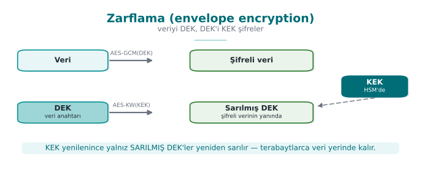
The reader looks at the version → finds the right key
The version field is AAD → an attacker can't redirect to an old/weak key
RTEU Computer Engineering · 2026-2027 Fall
CEN429 Secure Programming · Week 3
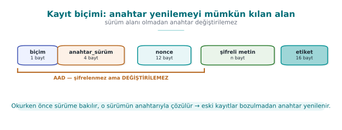
RTEU Computer Engineering · 2026-2027 Fall
CEN429 Secure Programming · Week 3
Where Is the Key Stored?
Option
Protection
Source code · configuration · environment variable
None / weak
DPAPI (CryptProtectData)
Tied to the user/machine account
Keychain · Android Keystore
OS, sometimes hardware
TPM
Hardware; key can't be extracted
HSM / cloud KMS
The key never leaves the HSM
The client only gets keys with limited damage, short lifetime
RTEU Computer Engineering · 2026-2027 Fall
CEN429 Secure Programming · Week 3
From the Field: Scheme Requirements and Four Key Groups
Requirement (Scheme-A / Scheme-B)
Corresponds to
Standard algorithm, secure configuration
Correct API use, TLS
Every key: hierarchy, use, crypto-period ; single purpose
Hierarchy, key separation
Install, update, delete when the job is done
Lifecycle
The random-number call must not be hookable
Week 6
Keys bound to, and different per, device and app
Device/version binding
Groups: dynamic device keys (whitebox) · dynamic payment keys · a single static key (string obfuscation) · server certificate
RTEU Computer Engineering · 2026-2027 Fall
CEN429 Secure Programming · Week 3
Session Key: A Flow from the Field
Server generates a 32-byte session ID → encrypted with the configuration key → arrives via push notification
Client decrypts it with whitebox AES
Authentication code = SHA-256(part of the session ID + wallet ID + device fingerprint)Session key = HMAC(digest of the configuration key, session ID) → 16-byte AESMessage: AES-CTR + 256-bit MAC
RTEU Computer Engineering · 2026-2027 Fall
CEN429 Secure Programming · Week 3
Session Key: Today's Recommendation
In the design
Today
CTR + separate MAC
AEAD (GCM / CCM / ChaCha20-Poly1305)
Custom HMAC derivation
HKDF + separate info
SHA-1
SHA-256 · ephemeral (EC)DH for forward secrecy
RTEU Computer Engineering · 2026-2027 Fall
CEN429 Secure Programming · Week 3
This Section's Rule
Organise keys within a hierarchy ; give every key a single purpose and a crypto-period.
Envelope-encrypt the data; protect the key version with AAD.Only download keys with limited damage, short lifetime to the client device.
RTEU Computer Engineering · 2026-2027 Fall
CEN429 Secure Programming · Week 3
8. Data in Transit: TLS 1.3
RTEU Computer Engineering · 2026-2027 Fall
CEN429 Secure Programming · Week 3
TLS 1.3 Handshake
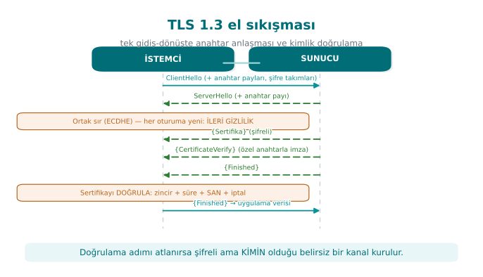
A single round trip · always ephemeral ECDHE → forward secrecy by default .
RTEU Computer Engineering · 2026-2027 Fall
CEN429 Secure Programming · Week 3
Three Layers of Validation
Layer
Question
Chain Did a trusted CA sign it, is it expired/revoked?
Hostname Is the certificate really for this server?
Pinning Is it the specific key I expect?
⚠️ OpenSSL's default: doesn't validate! SSL_VERIFY_PEER + SSL_set1_host are required.
RTEU Computer Engineering · 2026-2027 Fall
CEN429 Secure Programming · Week 3
Pinning and TOFU
Pinning: embed the SHA-256 of the server's public key (SPKI) . Even if the chainREJECT if the key doesn't match. (Common on mobile.)TOFU: without a PKI, remember the first key, warn if it changes (the SSH model).
TLS 1.2 → 1.3: a single RTT · only strong AEAD suites · weak features removed
RTEU Computer Engineering · 2026-2027 Fall
CEN429 Secure Programming · Week 3
Demo 6 — MITM → Hostname + Pinning
1 Guvensiz -> SALDIRGAN: KABUL (TEHLIKELI, MITM olurdu)
2 Dogrula -> GERCEK : DOGRULANDI, KABUL
3 Dogrula -> SALDIRGAN: REDDEDILDI (kendi imzali)
4 Pin -> GERCEK : pin TUTTU, KABUL
5 Pin -> SALDIRGAN: pin TUTMADI, REDDEDILDI
Only 127.0.0.1, certificates we generated ourselves. (Windows: run it under WSL.)
RTEU Computer Engineering · 2026-2027 Fall
CEN429 Secure Programming · Week 3
"Don't Rely on TLS Alone"
The TLS channel protects the connection, but the endpoints can be untrusted (a rooted
In high-security settings, add one more layer inside TLS: message-level AEAD + MAC
This way, even if TLS is bypassed, the body is still encrypted → the outermost 2 layers of the security shell
✅ Don't swallow a certificate error, don't fall back to the trust store (fail-closed).
RTEU Computer Engineering · 2026-2027 Fall
CEN429 Secure Programming · Week 3
TLS Client: Steps 1–4 (Recipes 9.1, 10.7, 10.8)
SSL_CTX *ctx = SSL_CTX_new(TLS_client_method());
SSL_CTX_set_min_proto_version(ctx, TLS1_2_VERSION);
SSL_CTX_set_verify(ctx, SSL_VERIFY_PEER, NULL );
SSL_CTX_set_default_verify_paths(ctx);
A version-agnostic client context.
Sets the minimum version to TLS 1.2 — skip it and you're exposed to a downgrade attack.
Validate the peer's certificate — skip it and OpenSSL accepts any certificate.Loads the operating system's trusted root store.
RTEU Computer Engineering · 2026-2027 Fall
CEN429 Secure Programming · Week 3
The TLS Client's Steps — Diagram
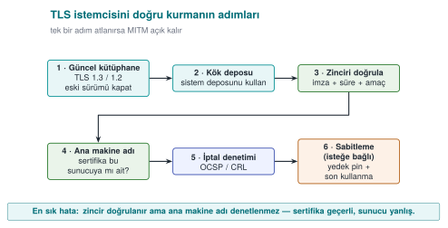
RTEU Computer Engineering · 2026-2027 Fall
CEN429 Secure Programming · Week 3
TLS Client: Steps 5–7
SSL_set_tlsext_host_name(ssl, ana_makine);
SSL_set1_host(ssl, ana_makine);
SSL_get_verify_result(ssl) == X509_V_OK;
Tells the server which name it wants (SNI) — skip it and the wrong certificate can come back on a shared IP.
Checks that the name on the certificate is this server.
Explicitly asks for the validation result — so a configuration mistake doesn't pass silently (belt and suspenders).
Textbook: OpenSSL's non-validating default is "possibly the worst default there is "
RTEU Computer Engineering · 2026-2027 Fall
CEN429 Secure Programming · Week 3
Why Is Step 6 Critical?
Chain validation only asks, "did a trusted CA sign it?"
An attacker can get a completely valid certificate for their own domain
Without a name check, a certificate for attacker.example gets accepted in place of bank.example
➡️ The 2012 "world's most dangerous code" study: a large number of applications and libraries skipped this step
RTEU Computer Engineering · 2026-2027 Fall
CEN429 Secure Programming · Week 3
SPKI Pinning
X509 *sert = SSL_get_peer_certificate(ssl);
int n = i2d_X509_PUBKEY(X509_get_X509_PUBKEY(sert), NULL );
for (i = 0 ; i < PIN_SAYISI; i++)
if (CRYPTO_memcmp(ozet, PINLER[i], 32 ) == 0 ) return 1 ;
return 0 ;
openssl s_client -connect s.ornek:443 -servername s.ornek </dev/null \
| openssl x509 -pubkey -noout | openssl pkey -pubin -outform der \
| openssl dgst -sha256 -binary | base64
RTEU Computer Engineering · 2026-2027 Fall
CEN429 Secure Programming · Week 3
Keeping Pinning Sustainable
Rule
Why?
Pin the SPKI , not the certificate
A certificate renewed with the same key keeps working
Always have a backup pin
The app doesn't "brick" if the primary is lost
Keep the backup key offline
So they aren't compromised together
Roll out a new pin before removing the old one
An upgrade window
Report pin failuresAttack, or misconfiguration?
Can't be disabled with a flag
The attacker would flip the flag first
Browsers dropped HPKP in 2018; pinning continues on mobile/desktop (MASVS-NETWORK)
RTEU Computer Engineering · 2026-2027 Fall
CEN429 Secure Programming · Week 3
Windows: WinHTTP / Schannel
WinHTTP validates the certificate and name by default
Danger: flags that turn validation off
DWORD b = SECURITY_FLAG_IGNORE_UNKNOWN_CA |
SECURITY_FLAG_IGNORE_CERT_CN_INVALID |
SECURITY_FLAG_IGNORE_CERT_DATE_INVALID;
WinHttpSetOption(istek, WINHTTP_OPTION_SECURITY_FLAGS, &b, sizeof b);
✅ Add the test server's CA to the development machine's trust store; keep the code the same
RTEU Computer Engineering · 2026-2027 Fall
CEN429 Secure Programming · Week 3
Critical Reading: A Door Left Silently Open
varsayilanDogrulayici.checkServerTrusted(zincir, tur);
try {
PublicKey beklenen = depo.getCertificate("ca" ).getPublicKey();
if (!Arrays.equals(beklenen.getEncoded(), zincir[0 ].getPublicKey().getEncoded()))
throw new CertificateException ("pin tutmadi" );
} catch (KeyStoreException e) {
e.printStackTrace();
}
The error is swallowed → pinning was skipped = fail-open
Also: revocation checking off in the fallback validator · "file not found, continue" · a single pin
✅ Fail-closed: if you can't determine the result → reject
RTEU Computer Engineering · 2026-2027 Fall
CEN429 Secure Programming · Week 3
Most Common TLS Mistakes
Mistake
Result
A validation callback that's always "valid" / a TrustManager that trusts everything
Every certificate accepted
Name check disabled (HostnameVerifier always true)
Another site's certificate accepted
"Continue anyway" on a certificate error (webview)
An interceptor goes unnoticed
A debug flag left in the release build
The attacker turns it on
A leaf-certificate pin with no backup
App crashes on renewal → pinning gets removed
"We already have TLS"
Data isn't protected in the clear on the server/client
RTEU Computer Engineering · 2026-2027 Fall
CEN429 Secure Programming · Week 3
Test Your Own Connection
openssl s_client -connect s.ornek:443 -servername s.ornek -verify_return_error -brief
openssl s_client -connect s.ornek:443 -tls1_1
A self-signed certificate → reject (Demo 6)
A valid certificate for another name → reject
Install your own CA on the device + a proxy → a pinning app should reject
Is a pin failure reported?
RTEU Computer Engineering · 2026-2027 Fall
CEN429 Secure Programming · Week 3
This Section's Rule
Manually turn on validation on the client: CA store + SSL_VERIFY_PEER + SSL_set1_host + min. TLS 1.2.Add SPKI pinning for high risk, always keep a backup pin .
Stay closed on error (fail-closed): don't swallow the exception and fall back to the trust store.
RTEU Computer Engineering · 2026-2027 Fall
CEN429 Secure Programming · Week 3
9. Data at Rest and in Use
RTEU Computer Engineering · 2026-2027 Fall
CEN429 Secure Programming · Week 3
Layers of Data in Use — Diagram
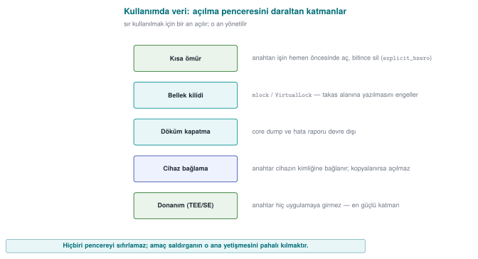
RTEU Computer Engineering · 2026-2027 Fall
CEN429 Secure Programming · Week 3
Data at Rest: Two Levels — Diagram
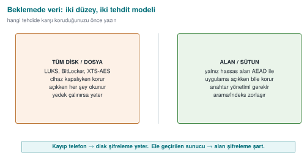
RTEU Computer Engineering · 2026-2027 Fall
CEN429 Secure Programming · Week 3
Data at Rest: File/Field Encryption
Full disk/file: LUKS, BitLocker, XTS-AES, or application-level AEADField/column: encrypt only sensitive fields at the application layer with AEADMasking: **** **** **** 4242 — this is not encryption, it reduces exposure
Masking doesn't replace encryption, it complements it (different threats).
RTEU Computer Engineering · 2026-2027 Fall
CEN429 Secure Programming · Week 3
Demo 7 — Encrypt a Field in SQLite with AES-GCM
Saldirgan DB'yi acti:
1|Ayse Yilmaz|D1ED7A36... <- kart alani SIFRELI
Dogru anahtarla uygulama:
1|Ayse Yilmaz|4242-4242-4242-4242
Yanlis anahtar:
1|Ayse Yilmaz|(COZULEMEDI - etiket tutmadi)
ad is in the clear, kart is encrypted. The key isn't embedded in the code (device-bound KDF).sqlite3, Windows built-in winsqlite3.
RTEU Computer Engineering · 2026-2027 Fall
CEN429 Secure Programming · Week 3
Data Masking: Four Techniques
Technique
Reversible?
Use
Masking at display No
Screen, receipt, log
Tokenization Only for those with vault access
Card storage, payment
Pseudonymization Matched back by whoever holds the key
Analytics, testing
Anonymization No
Open data
Pseudonymized data is still personal data (KVKK, GDPR) · "anonymous" is a much stronger claim
RTEU Computer Engineering · 2026-2027 Fall
CEN429 Secure Programming · Week 3
Masking at Display
void pan_maskele (const char *pan, char *cikti, size_t boyut) {
size_t n = strnlen(pan, 19 );
if (boyut < n + 1 ) { if (boyut) cikti[0 ] = '\0' ; return ; }
for (size_t i = 0 ; i < n; i++)
cikti[i] = (i + 4 < n) ? '*' : pan[i];
cikti[n] = '\0' ;
}
PCI DSS: at most the first 6 (8 in newer versions) + last 4
Mask close to the source: send it already masked to the client
RTEU Computer Engineering · 2026-2027 Fall
CEN429 Secure Programming · Week 3
Tokenization
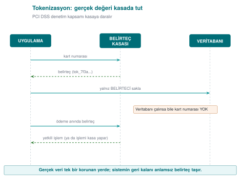
Even if the database, reports, or logs are stolen, there's no card number
PCI DSS scope shrinks = Week 1's "transfer " answer
What reaches the phone in mobile payment = a device-specific token number
Format can be preserved: FF1 (NIST SP 800-38G)
RTEU Computer Engineering · 2026-2027 Fall
CEN429 Secure Programming · Week 3
Pseudonym and Test Data
kripto_hmac_sha256(takma_anahtari, 32 , kimlik_no, strlen (kimlik_no), takma_ad);
❌ Plain SHA-256: an 11-digit ID number → all of them can be tried
✅ Keyed HMAC; key separate from the dataset · destroying the key = effectively anonymous
Preferred test data: 1. synthetic → 2. static masking → 3. dynamic masking
RTEU Computer Engineering · 2026-2027 Fall
CEN429 Secure Programming · Week 3
Masking in Logs
Prevent at the source: a sensitive type always prints maskedFilter at the output: 13–19 digits + Luhn, parola=, token= → ****
while ((p = strstr (p, "parola=" )) != NULL ) {
p += strlen ("parola=" );
while (*p && !isspace ((unsigned char )*p)) *p++ = '*' ;
}
⚠️ The filter is a second line of defence: it doesn't understand JSON, the data is already in memory · in the field, logging is removed entirely in the release build
RTEU Computer Engineering · 2026-2027 Fall
CEN429 Secure Programming · Week 3
Data in Use: 3 Layers
Layer
Linux
Windows
Block dumps
RLIMIT_CORE=0SetErrorMode
Lock memory
mlockVirtualLock
Secure erase
OPENSSL_cleanseSecureZeroMemory
+ short lifetime , no copying. memset can be optimised away at -O2; cleanse cannot be removed.
RTEU Computer Engineering · 2026-2027 Fall
CEN429 Secure Programming · Week 3
Demo 8 — mlock + Secure Erasure
Katman 1 - cokme dokumu kapatildi: TAMAM
Katman 2 - mlock ile takasa yazma engellendi: TAMAM
Sir kullaniliyor: dolu bayt = 20
Katman 3 - guvenli silme sonrasi dolu bayt = 0
OPENSSL_cleanse cagrisi makine kodunda kaldi (memset gibi silinmez)
Device binding: wrap the key from the device fingerprint with HKDF + AEAD → can't be
RTEU Computer Engineering · 2026-2027 Fall
CEN429 Secure Programming · Week 3
This Section's Rule
At rest: encrypt sensitive fields with AEAD , don't embed the key in code.
Masking doesn't replace encryption, it complements it (log, screen, testing).
In use: open the secret at the last moment , keep it as briefly as possible , and erase it irrecoverably.
RTEU Computer Engineering · 2026-2027 Fall
CEN429 Secure Programming · Week 3
10. Security Shells
RTEU Computer Engineering · 2026-2027 Fall
CEN429 Secure Programming · Week 3
Demo 9 — Wrap with 4 Shells, Open in Reverse Order
SARMA: sir -> K1(cihaz) -> K2(depo) -> K3(oturum) -> K4(kanal)
Kabuk 4 = 128 bayt <- aktarilan paket
ACMA : K4 -> K3 -> K2 -> K1 -> sir (hepsi TAMAM, sir DOGRU)
Saldiri 1: 1 bit kurcala -> Kabuk 4 RED (etiket tutmadi)
Saldiri 2: baska cihaza kopyala -> dis 3 kabuk acilir,
Kabuk 1 (cihaz) RED -> sir ACILAMAZ
✅ Not "which single measure?" but "which layers ?" · independent keys.
RTEU Computer Engineering · 2026-2027 Fall
CEN429 Secure Programming · Week 3
The Shell Matrix in the Field
Shell
Content
1
Payment key in whitebox DES form — never in the clear
2
WB-AES-CBC with the wallet key + device + app binding
3
At rest: WB-AES-CBC + SHA-256 MAC + device + version · In transit: session-keyed AES + MAC
4
TLS + public-key pinning + server certificate check
Outer
Authentication code (session key + binding)
RTEU Computer Engineering · 2026-2027 Fall
CEN429 Secure Programming · Week 3
One Asset, Five Stages
Stage
K1
K2
K3
K4
Transfer from server
✔
✔
✔
✔
Storage in database
✔
✔
✔
—
Decryption / API on the Java side
✔
✔
—
—
Java side in payment
✔
✔
—
—
Native side in payment✔
—
—
—
Even at the innermost point, one shell remains · RASP protects that moment's exposure
A "normal" asset: 1 shell at rest, 2 in transit → cost balance
Once an attack is detected, the local database is wiped entirely
RTEU Computer Engineering · 2026-2027 Fall
CEN429 Secure Programming · Week 3
This Section's Rule
When protecting a critical asset, don't ask "which single measure?" — ask "which layers ?"
Put a shell on every stage (transport, storage, use).
Build the shells with independent keys from one another; breaking one shouldn't give up another.
RTEU Computer Engineering · 2026-2027 Fall
CEN429 Secure Programming · Week 3
11. Introduction to Whitebox Cryptography
RTEU Computer Engineering · 2026-2027 Fall
CEN429 Secure Programming · Week 3
The Road to Whitebox — Diagram
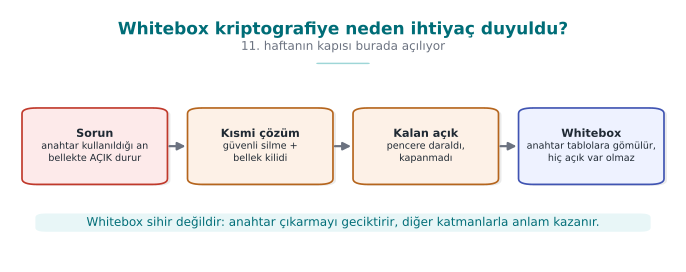
RTEU Computer Engineering · 2026-2027 Fall
CEN429 Secure Programming · Week 3
Why Whitebox?
This week's hidden assumption: the key sits in the clear in memory while it's in use
"The device owner is the attacker" can read memory → catches that moment
Secure erasure narrows the window, it doesn't close it
Whitebox: embeds the key into tables, its raw form never appears in memory
⚠️ Not a magic wand: still open to oracle/code-lifting attacks → needs the other shells too.Details: Week 11.
RTEU Computer Engineering · 2026-2027 Fall
CEN429 Secure Programming · Week 3
Common Misconceptions
❌ "I encrypted it, I'm safe" → encryption only gives confidentiality; use AEAD for integrity
❌ "TLS is on, MITM is impossible" → possible without validation (Demo 6)
❌ "I stored the password with SHA-256" → unsalted/fast; needs Argon2id + salt
❌ "The nonce must be secret" → no, it must be unique ; the key is what's secret
❌ "I'll write my own cipher" → Kerckhoffs: security is in the key, not the algorithm
RTEU Computer Engineering · 2026-2027 Fall
CEN429 Secure Programming · Week 3
End to End: Protecting a Note in All Three States
An app protects a user's "note": it arrives from the server (in transit), sits on disk (at rest), and is shown on screen (in use).
State
Protection
Section
In transit
TLS 1.3 + chain/SAN + SPKI pin (where applicable)
8
At rest
AES-256-GCM (AEAD), a unique nonce, key from a KDF
5, 9
In use
Keep it in memory as briefly as possible, erase when done
9
Key chain: password → KDF → master key → HKDF → data/session key; AEAD integrity comes along at every stage.
RTEU Computer Engineering · 2026-2027 Fall
CEN429 Secure Programming · Week 3
Classic Crypto Mistakes — Summary
Mistake
Section
Rule
Nonce reuse
4
Never repeat with the same key; use a counter or a sufficiently random nonce
Weak randomness
3
Not rand() — a CSPRNG (getrandom, BCryptGenRandom)
Making the password the key directly
5
Derive it with a KDF (salted, slow)
ECB mode
4
Leaks patterns (the "penguin"); use AEAD
Encryption without integrity
2
AEAD or encrypt-then-MAC
A non-constant-time comparison
3
Not memcmp — compare in constant time
All six mistakes were covered earlier in this deck; here they are gathered in one glance.
RTEU Computer Engineering · 2026-2027 Fall
CEN429 Secure Programming · Week 3
Project: This Week (S5, S7)
S5 — Asset list (draft): every sensitive asset; location, lifetime, C/I/I+, protectionS7 — Data security + shell matrix: every asset × three states × shells; secure
Requirement families: CEN429-DT/DR/DU (in transit/at rest/in use), AS, CR
Add a row to the S17 compliance matrix for every requirement.
RTEU Computer Engineering · 2026-2027 Fall
CEN429 Secure Programming · Week 3
Class Activities
Stop the MITM: disable SSL_set1_host in Demo 6 → which attacker slips through?Repeat a nonce: a fixed nonce in Demo 1 → XOR two ciphertextsMap the three data states: a threat/countermeasure table for a health appKDF cost: find the round count that gives 100 ms
RTEU Computer Engineering · 2026-2027 Fall
CEN429 Secure Programming · Week 3
Self-Check (Sample)
The difference between AEAD and AES-CTR?
Why is nonce reuse a disaster?
Why isn't ECB used?
The OpenSSL client's most dangerous default?
What does pinning catch, what does hostname validation catch?
What is a security shell, give an example?
Full list (20 questions) and answers on the course site. Quiz-1 is in this style + code reading.
RTEU Computer Engineering · 2026-2027 Fall
CEN429 Secure Programming · Week 3
Self-Check — Answers (Sample 1–6)
AES-CTR provides confidentiality only; AEAD (AES-GCM) provides confidentiality + integrity/identity together with a tag . Changes go unnoticed in CTR.The same key+nonce repeats the keystream ; the XOR of two ciphertexts leaks the plaintext, and in GCM the authentication key is at risk.
ECB turns the same block into the same ciphertext block → patterns are visible ; no semantic security.The client doesn't validate the certificate/hostname on its own ; without turning it on manually, MITM is possible.
Pinning: pins the expected server key (SPKI) → catches a fake-but-"valid" certificate. Hostname validation: catches whether the certificate belongs to the correct domain .Security shell: protection wrapped around an asset (C=confidentiality, I=integrity). E.g., a key file = AES-GCM (C) + tag/HMAC (I).
RTEU Computer Engineering · 2026-2027 Fall
CEN429 Secure Programming · Week 3
Self-Check (Continued)
Why can't rand() be used for security? What instead?
EVP_DecryptFinal_ex returned failure; what do you do with the plaintext in the buffer?Why is memcmp risky for MAC comparison?
Is a key whose crypto-period has expired deleted immediately?
Why isn't the data re-encrypted when the KEK is renewed in envelope encryption?
RTEU Computer Engineering · 2026-2027 Fall
CEN429 Secure Programming · Week 3
Self-Check — Answers (7–11)
rand() is statistical and predictable → use a CSPRNG (RAND_bytes / getrandom).If decryption fails, securely erase the plaintext in the buffer (memset_s) and reject it — integrity wasn't verified, don't use it.
memcmp exits early → a timing leak ; use CRYPTO_memcmp / a constant-time comparison.No. It's not used for new encryption, but it's kept for decryption only until the old data is re-encrypted.The data is encrypted with the DEK ; when the KEK is renewed, only the DEKs are rewrapped , not the data.
RTEU Computer Engineering · 2026-2027 Fall
CEN429 Secure Programming · Week 3
Self-Check (Continued)
What happens if SSL_set1_host isn't called?
Why SPKI for pinning, and why a backup pin?
What is "fail-open"? An example
Why can't a plain SHA-256 of an ID number be a pseudonym?
Why does tokenization shrink PCI DSS scope?
RTEU Computer Engineering · 2026-2027 Fall
CEN429 Secure Programming · Week 3
Self-Check — Answers (12–16)
Without SSL_set1_host, the hostname isn't validated ; a valid certificate for another name gets accepted → MITM.
The SPKI stays the same even if the certificate is renewed (as long as the key is the same); a backup pin prevents the app from "bricking" when the key changes.
Fail-open: treating an error as "passed/allow"; e.g., a swallowed KeyStoreException skipping validation.An ID number's value space is small/predictable → plain SHA-256 can be brute-forced back ; a keyed HMAC is needed.
Tokenization: the real PAN stays only in the vault ; the rest of the system holds tokens → the PCI DSS audit scope shrinks.
RTEU Computer Engineering · 2026-2027 Fall
CEN429 Secure Programming · Week 3
Self-Check (Continued)
The three states of data and each one's protection?
Why can't a password be a key directly?
What does AEAD provide, which separate steps does it replace?
What does forward secrecy mean?
Is IV/nonce/salt secret? What's the rule?
Why is a CSPRNG needed?
Why does a key hierarchy exist?
RTEU Computer Engineering · 2026-2027 Fall
CEN429 Secure Programming · Week 3
Self-Check — Answers (17–23)
In transit (TLS), at rest (AEAD encryption), in use (short lifetime + erasure).It's low-entropy and predictable; it's derived, salted and slow, with a KDF (PBKDF2/Argon2).
Confidentiality + integrity together; it replaces separate encryption + MAC steps.A new key every session; even if the long-term key leaks, old sessions can't be decrypted.
Not secret , but must be unique/non-repeating ; nonce reuse and a fixed salt are dangerous.rand() is predictable; a CSPRNG (the OS) is needed for keys/nonces/salts.A single key isn't used for every job; derived keys come from a master key, each with its own job and lifetime.
RTEU Computer Engineering · 2026-2027 Fall
CEN429 Secure Programming · Week 3
Glossary
Term
Meaning
Three states
In transit/at rest/in use
AEAD
Encryption + integrity
CSPRNG
Secure random generator
KDF/HKDF
Key derivation
Nonce/salt
Unique/random helper value
Forward secrecy
Old sessions can't later be decrypted
RTEU Computer Engineering · 2026-2027 Fall
CEN429 Secure Programming · Week 3
Next Week
Week 4 — Code Hardening: C/C++
This week we learned to protect data (keys, plaintext) with correct encryption and key management; but the encryption code itself is also a C/C++ program, and a buffer overflow, format-string bug, or integer error can leak the very key and plaintext we carefully protected.
Week 4 covers preventing exactly these mistakes with the SEI CERT C/C++ rules, and catching them with static analysis and sanitizers.
Protect data in all three states : the right mode (AEAD), secure randomness, a key from a KDF, a unique nonce, and a well managed key hierarchy.
We'll go deeper into PKI and certificates in Week 10.
RTEU Computer Engineering · 2026-2027 Fall
Speaker note: This week the focus shifts from the program to the DATA. A secret has three states; each state has a different threat and a different defence. Main idea: the security shell (the concrete form of defence in depth).
Speaker note: Build the lab in advance. build.ps1 on Windows, build.sh under WSL. Crypto comes from a single header: OpenSSL on Linux, BCrypt on Windows.
Speaker note: Weeks 1-2 protected the program; this week the focus is on data. The same defence-in-depth idea applies here too.
Speaker note: Ask the students: a password in a banking app on your phone — which of these three states is it in? Answer: all of them.
Speaker note: These three questions are exactly what today's demos answer.
Speaker note: Students usually think "I encrypted it = it's safe." This section breaks that misconception from the start.
Speaker note: A 1 GB file isn't encrypted with RSA. Asymmetric only carries the key. Make this distinction clear.
Speaker note: "The evaluator changes one byte and checks whether the app silently returns wrong data anyway." Recipe 6.18 in the textbook → AEAD.
Speaker note: The evaluator also checks that encrypting the same plaintext twice gives different ciphertexts (no nonce reuse).
Speaker note: The Debian incident is one of the most memorable examples in the course; "I deleted two lines, and for two years broken keys were generated" is a compelling narrative.
Speaker note: This is another version of the Debian incident; an unchecked return value can lead to a similar disaster.
Speaker note: Diagram requirement: the call to the random-number source must not be hookable. In the field, a client doesn't generate the payment random number; the native side only uses it to fill memory.
Speaker note: Field guides contain an algorithm inventory table. A few years back these inventories showed SHA-1 and CBC with a separate MAC; today they show SHA-256 and AEAD.
Speaker note: The ASCII version of the famous "ECB penguin" example. In code review, every occurrence of 'ecb' is a finding.
Speaker note: These three concepts are among the most confused on the exam; reinforce the "secret vs. unique" distinction.
Speaker note: Argon2id additionally requires memory; it makes parallel brute force with a GPU/ASIC harder than PBKDF2 does.
Speaker note: 200 ms is acceptable to the user; for an attacker it means thousands of attempts instead of billions.
Speaker note: "Don't run one key through every job" — this section's one-sentence summary.
Speaker note: Critical reading: it met the requirements of its design era; the skill is explaining, with reasons, what should change today and why.
Speaker note: Comment out the SSL_set1_host line and rebuild; which attacker still gets caught, which one slips through? Class activity.
Speaker note: In code review, also look specifically for catch blocks and "not found, continuing" log lines.
Speaker note: An example transfer from the field: TLS + public-key pinning + server certificate-chain check (the outer shell) plus session-keyed message encryption inside it. If the server address and pin values come from the parent app as parameters, protecting them becomes the parent app's responsibility, and the guide should say so.
Speaker note: An evaluator looks for full card/ID numbers and passwords in screens, network responses, logs, crash reports, and backups; they also ask whether real data is used in the test environment.
Speaker note: Today an AES-based whitebox and AEAD modes would be preferred over DES; the matrix idea itself is timeless. This table will be filled in for S7 in the project.
Speaker note: Make groups of 3-4. Activities 1 and 3 are the most productive for discussion.
ask first, then open the answer slide
ask first, then open the answer slide
ask first, then open the answer slide